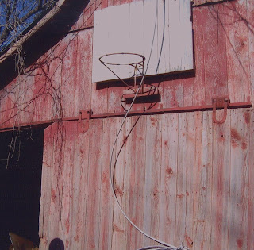
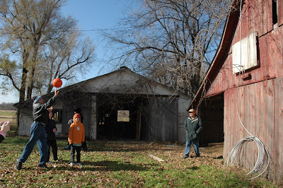

58 years - just like yesterday
4/19/2009
{kind=link}

When I was in 9th grade, I took Vocational Agriculture in school. My favorite times in that class were the hours spent in the school's shop. For one six week period I selected blacksmithing. I loved the sights, smells, and heat of the forge; the sound of the hammer shaping red hot metal on the anvil. One of my projects was making a basketball goal which my Dad help me mount on the side of our barn ... fastened to a backboard which I also built and painted. Over the following years my brothers and friends spent countless hours shooting hoops on our outdoor barnyard court.
Here you see the backboard and goal as they appear today. Last Thanksgiving weekend our family revisited the farm where we grew up. What a pleasant surprise it was to see my school project from nearly 60 years ago still in place and functional! It seemed just like yesterday!

On the chance we would find the goal still in place I had taken a basketball along so I could play a game of "Horse" with two of my grandchildren who are basketball enthusiasts. I can't put into words the special pleasure I experienced playing with my grandchildren at the very place where I had spent so many hours playing as a youth! Oh, the stories I shared as we took our turn shooting at the hoop!